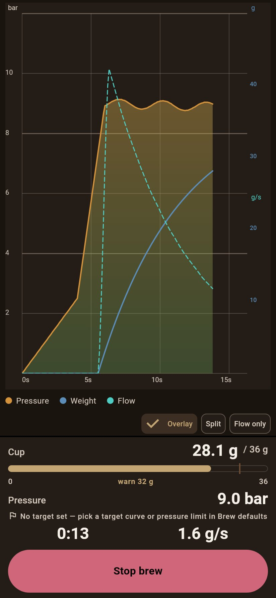
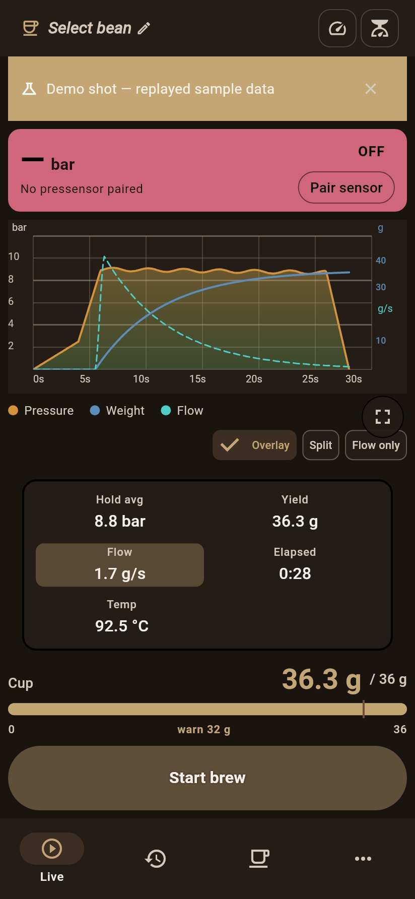
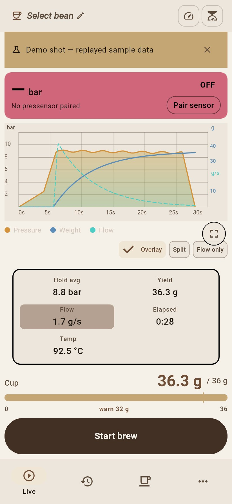
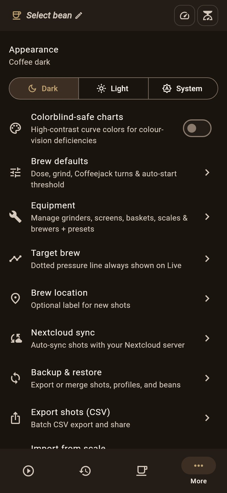

Personal coffee app
A personal coffee hub: live shot curves, history, a bean library, and tooling for a scale and a pressure sensor.
Personal, experimental software. Nothing here is a finished product, and nothing was necessarily written or reviewed by a human unless it says so. Use it at your own risk.




Current build: 0.0.8 (version code 223), arm64-v8a.
On Android, Obtainium can install updates from a Standard JSON file. Add this URL:
https://raw.githubusercontent.com/isyourbrainfoss/Flowlog/gh-pages/version.jsonAdd in Obtainium (opens the app if it is already installed).
GitHub Release asset URLs often fail on phones with “Connection closed while receiving data”. Prefer the JSON mirror above.
SHA-256: 6f516ec0259ff38ac2f7c58a88b5edca1a2fcf7996ebe3a97e28c659fe8ecbc2
x86_64 and aarch64, including Linux phones. Not on Flathub — use the project remote.
flatpak remote-add --if-not-exists --user flowlog \
https://isyourbrainfoss.github.io/Flowlog/flowlog.flatpakrepo
flatpak install --user flowlog com.flowlog.flowlogThe GNOME runtime is pulled from Flathub on first install.